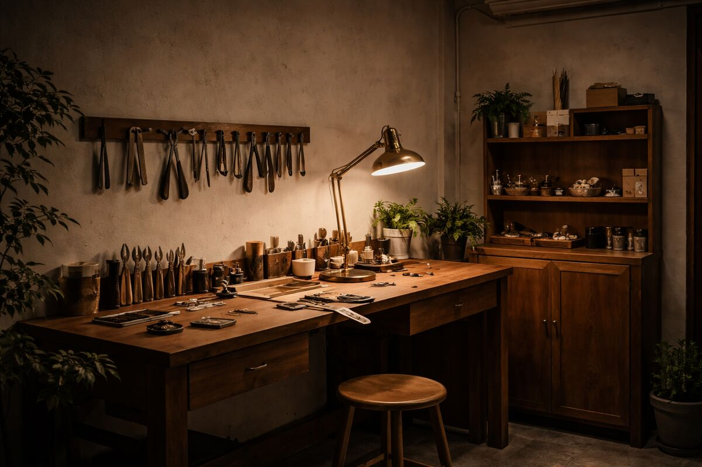
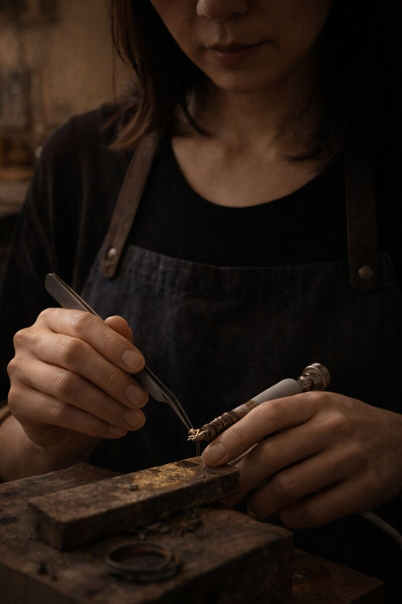
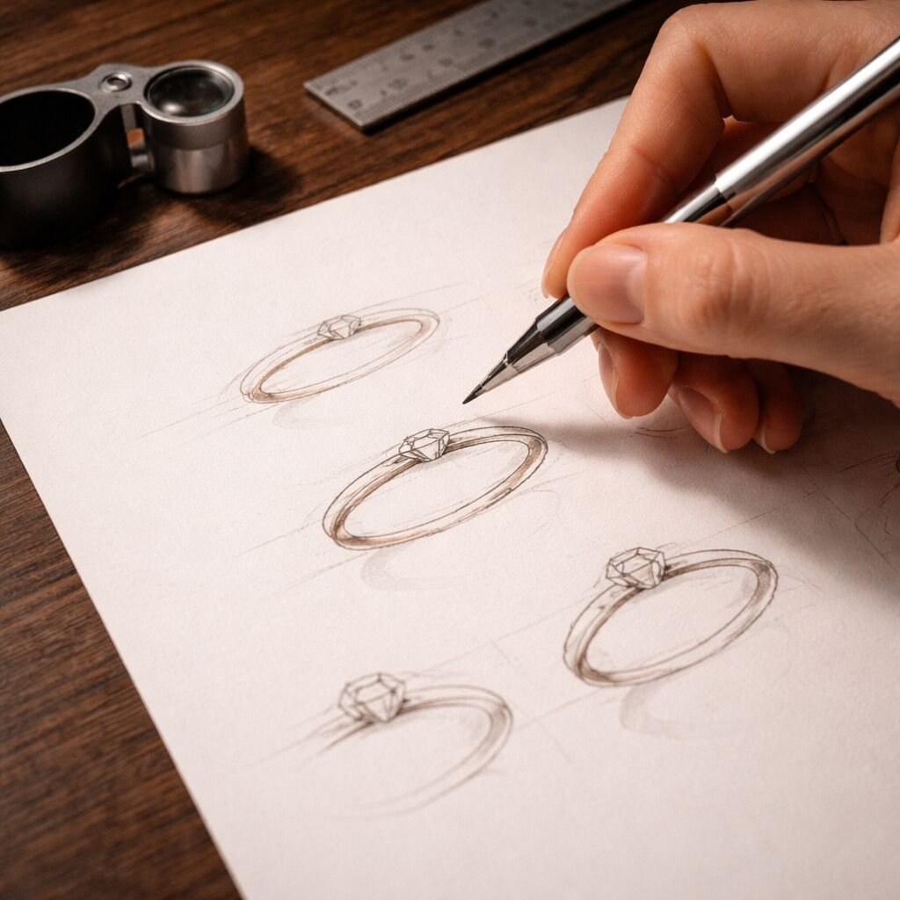
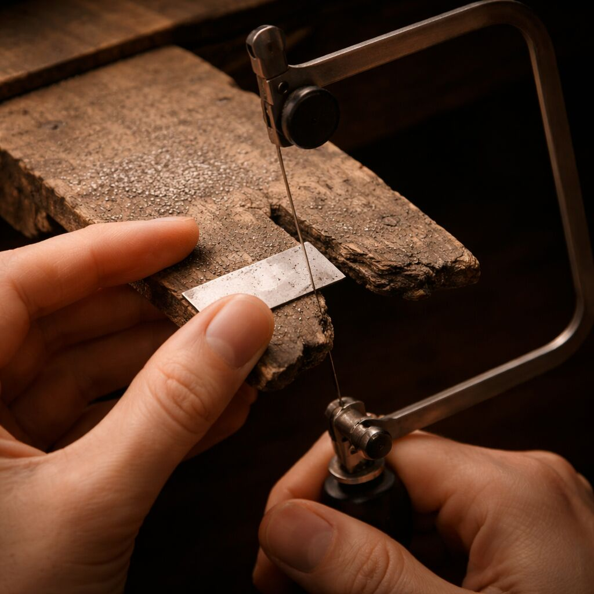
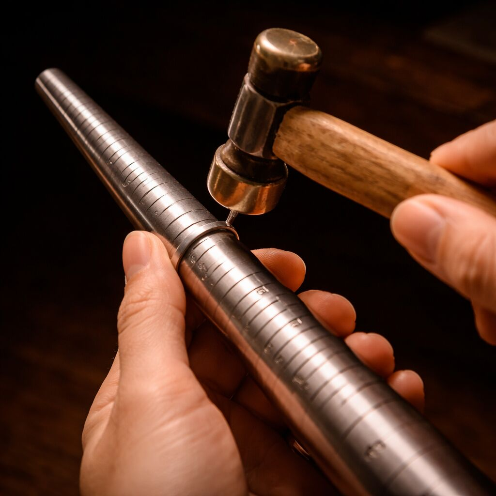
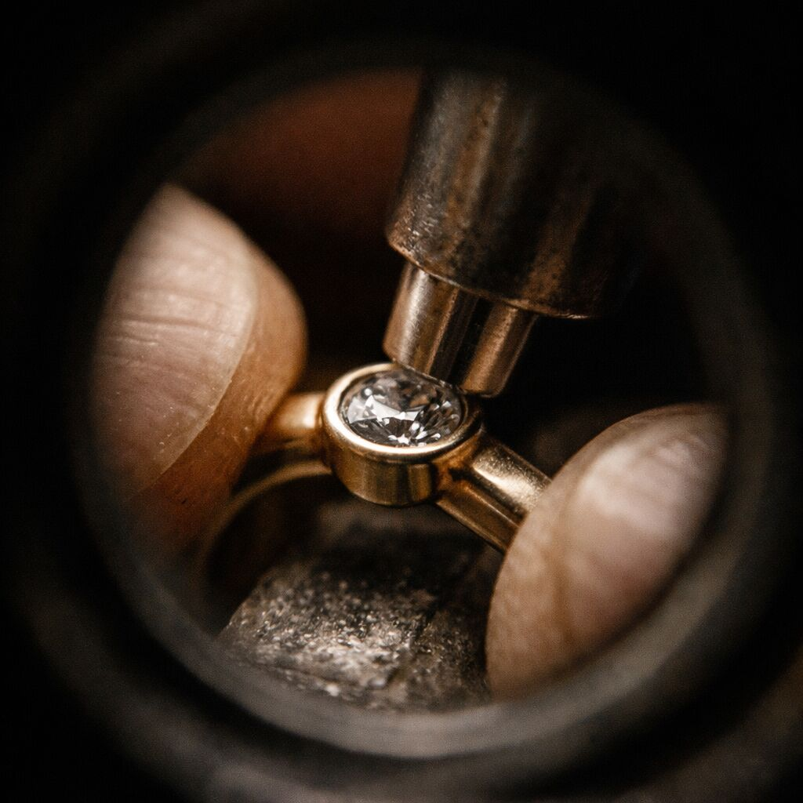
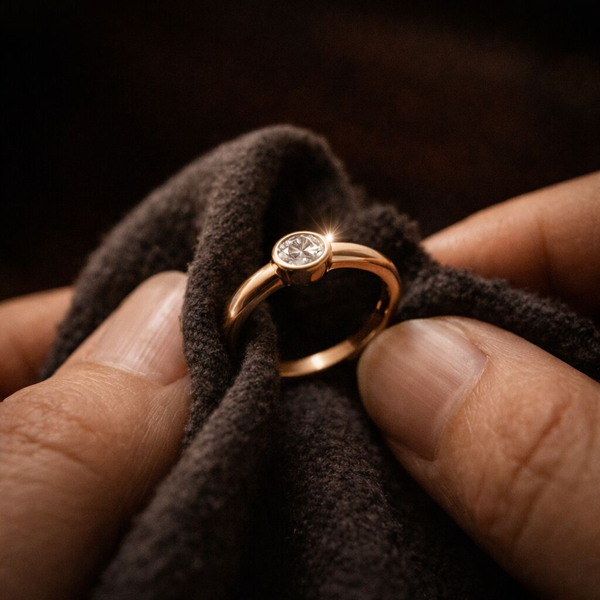
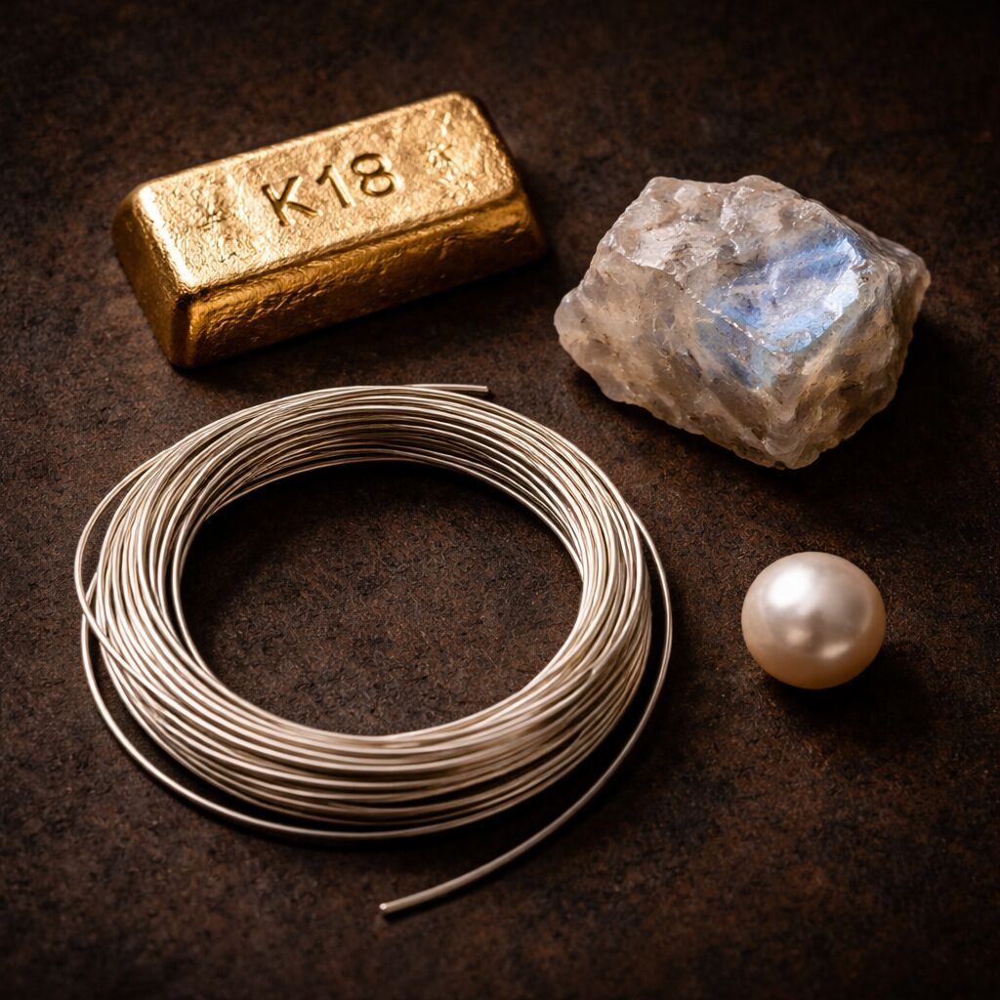
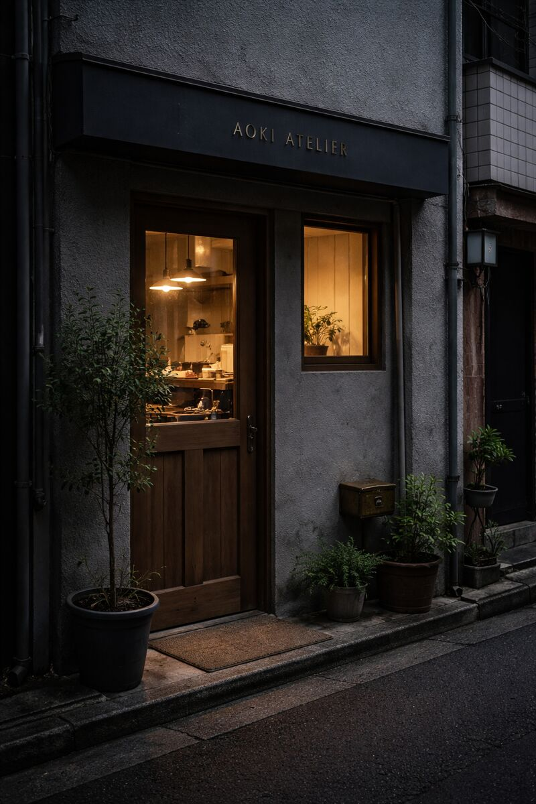
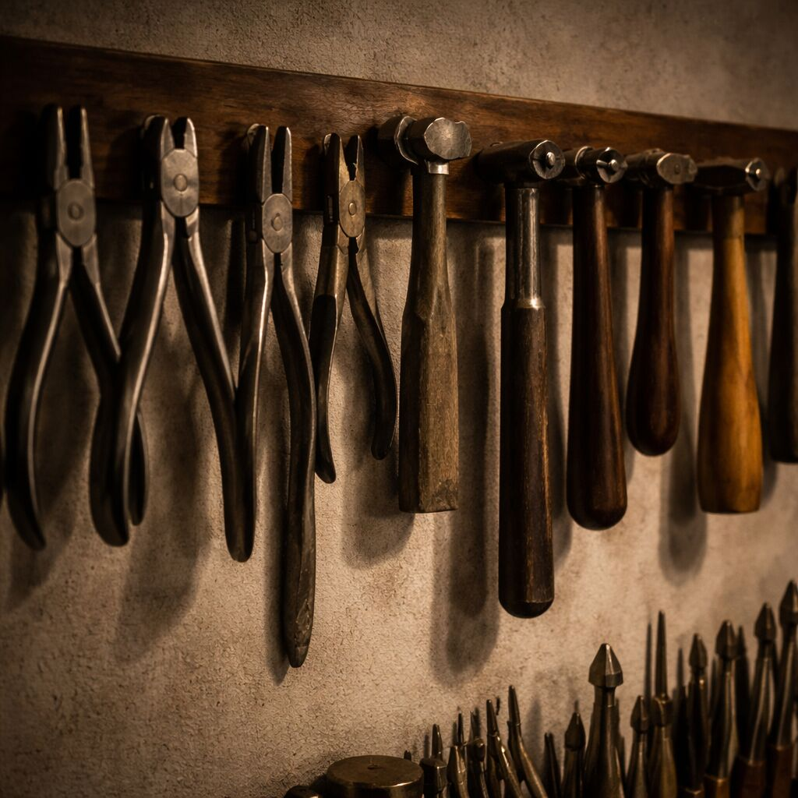

The Designer
Aoki Haruka
After studying metalwork at Musashino Art University and apprenticing under a traditional kinzoku-shi in Taito-ku, Aoki founded her atelier in Kuramae in 2018.
Her work lives at the intersection of Japanese metalcraft tradition and contemporary minimalism — each piece shaped not by trend, but by the quiet dialogue between hand and material.
武蔵野美術大学で金工を学び、台東区の金属師のもとで修行。
2018年、蔵前にアトリエを構える。
Craftsmanship
The Making

Sketch & Design
Every piece begins with pencil on paper. The initial sketch captures the essence — the proportion, the weight, the light.
すべては一本の線から。比率、重み、光のバランスを手描きで探る。

Metal Forming
SV925 and K18 are heated, hammered, and shaped by hand. The metal reveals its character through the process — no two pieces respond the same way.
銀や金を熱し、鍛え、手で形にする。同じ反応は二度とない。

Stone Setting
Diamonds, moonstones, pearls — each stone is set by hand under magnification. Precision meets intuition.
ルーペの下、一石ずつ手作業で留める。精密さと直感の交差点。

Finishing & Polish
The final surface is decided — mirror polish, matte, or oxidized. Each finish tells a different story of light and shadow.
鏡面、マット、いぶし。仕上げが光と影の物語を決める。

Inspection & Delivery
Every piece is inspected under natural light before being placed in its hand-assembled box. Ready to become part of someone’s story.
自然光のもとで最終検品。誰かの物語の一部になる準備。
Materials
Honest materials,
honest craft.
We work exclusively with SV925 sterling silver, K18 gold, and ethically sourced natural stones. No plating that fades, no shortcuts that compromise. The material itself is the design — its texture, its weight, its warmth against skin.
SV925、K18、天然石。
色褪せるメッキも、妥協もない。
素材そのものが、デザインである。

The Atelier
Kuramae, Tokyo


⟨ 111-0051 ⟩
Tokyo, Taito-ku, Kuramae 2-14-5
Kuramae Craft Building 3F
〒111-0051
東京都台東区蔵前2-14-5
蔵前クラフトビル 3F